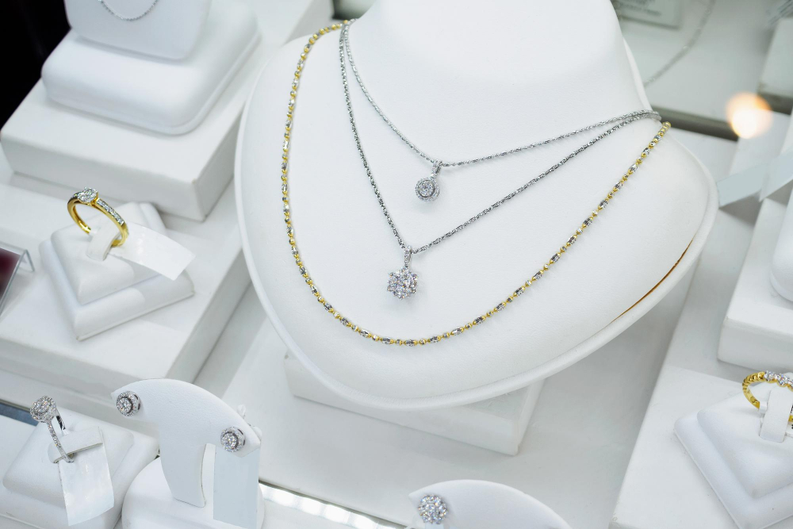

Nuestra historia
Diseños que
Diseños que
cuentan historias
Todo comenzó con un boceto en papel y la pregunta: ¿por qué las joyas bonitas tienen que ser inaccesibles? Vulcaria nació como respuesta a esa pregunta — una propuesta que une calidad artesanal con diseño contemporáneo.
A lo largo de nuestra trayectoria hemos explorado diferentes técnicas, materiales y estilos hasta construir una identidad propia: elegante, moderna y con alma.
